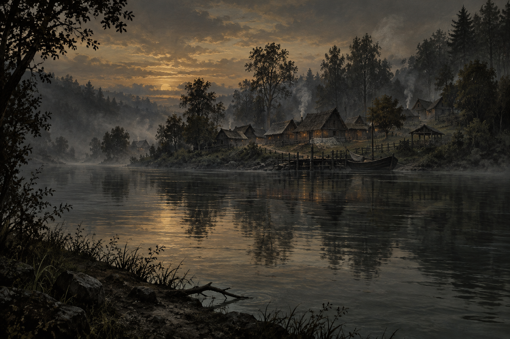

Before the new faiths raised their temples, humans believed in the older things.
They worked the earth with their hands. They knew where the river would rise in spring, where the frost lingered, where the roots of the oldest trees reached beneath their fields. They sowed, and waited, and bent their backs beneath the sun. When the harvest came, they carried a portion to the places their parents had shown them.
There were no walls around those places. A child could find them by the worn earth beneath a tree, by a hollow in the stone where rain gathered beside the offerings.
They brought what they had labored to grow. Even in lean years, something was set aside.
They held the land in reverence. They loved it through seasons of plenty and want, and something there had always loved them in return.
Then came the settlers.
They wandered beside the river with their goods and their gods, looking for ground on which to remain. They saw timber in the woods and fields beneath the trees. Where the banks drew close, they saw a crossing. Beyond it lay land that bore no boundary they recognized.
They called it unclaimed.
Axes opened the forest. Stakes divided the earth. The settlers built their shelters, planted their crops and thanked the gods they had brought with them. At harvest, they carried their offerings past the old places to altars newly raised.
Into these new faiths, towns were formed, cities were dreamed, and Solemn was born.

Those who remembered the older powers grew old. Their hands could no longer carry a basket to the river. Their children moved away, or married into households where other prayers were spoken. At last there was nobody left to teach the names.
The old went unloved. Unwanted. Forgotten in the hearts of those who inherited the land, they dwindled and died.
In spring, the fields were sown again. Grass covered the worn places beneath the trees. Rain gathered in the hollow stone, and when it overflowed, there was no one to empty it before laying down the bread.
Solemn prospered.
The ferry became a bridge. The landing saw larger boats. Grain filled the storehouses, and the people who owned them built their homes above the reach of the floods. In time, they forgot how closely their parents had watched the river.
Among them were the Bakers.
They purchased land, lent money and paid for the works the settlement required. Their name appeared on deeds and foundation stones. The bridge shortened the journey to market. The storehouses kept grain dry through winter. There was much for which the town could thank them.
The loans passed from fathers to sons. On the foundation stones, the names endured more clearly than the dates.
The women of the wealthy households raised churches to the new gods. They kept the books, arranged the observances and gave food to the hungry. There was kindness in those kitchens. A bowl placed in cold hands could still be given with love.
The names of those receiving food were entered in the church books. Some returned each winter. In later years, their children came.
In time, the children learned which families had brought civilization to the river. They learned the dates of bridges, the cost of public works and the names of benefactors. The people who had tended the land before the first deed were given a few lines, where they were mentioned at all.
Little was known of their beliefs, the books explained. By then, the hollow stone had been broken for a wall, and the path that led to it ended at a gate.
There were stories about the Baker matriarch's own books, about visitors admitted after prayers and lights behind shutters long after the household slept. Her enemies repeated them. Others repeated her enemies. Whatever she had sought in those rooms remained behind their doors.
Below the heights, the town dug deeper.
The river was widened for trade. Marshes were drained. Men were paid to cut through ground their grandfathers had left alone, and beneath it they found black stone steps descending where no building was remembered.
For a little while, the work stopped.
There were reports. There were disagreements about what had been found and what should be done with it. At last the cutting was filled, the expense entered, and instructions passed to those who would build above it.
Certain ground was to remain undisturbed.
The plans were amended. A road went farther east; a new foundation stood clear of the forbidden ground. Before long, carts were passing the site each morning, carrying stone for the next street.
Now the lamps of Solemn burn through the night.
The river carries their reflections beneath the wharves, past warehouse doors and the mouths of drains. The old paths lie under paving. Far beyond the last streets, surveyors drive stakes through fields still warm from the hands that worked them.
The new roads will bring trade, the surveyors explain. There will be work where the fields stood, and homes for those who come to find it. They speak patiently to the families at the gates. The plans have already been drawn.
Three houses hold it now: Veyr, Serpent's Kiss and Iron Tide. They keep account of the land, the labor and the passage of goods. Between them, little enters Solemn without being counted. Little leaves without somebody being paid.
At harvest, the grain is weighed before it leaves the fields. Rent is due, and freight, and interest carried from the season before. What remains may be kept by those who grew it. In a lean year, the balance is entered against the next.
The churches still open. The kitchens still feed the hungry. Each year there are more mouths at their doors, and each year the city's wealth is greater.
Its children are taught to be proud of this wealth. They learn who owns the riverbank and what may be cut from the forest that remains. They learn the value of a field before they have ever held its soil.
There is a record of every acre. There is a name beside every sum still owed. The city has taken such care to preserve these things. Surely it could have kept a little room for what was given freely.
Beneath their streets, the sealed places remain. The restrictions are copied from one deed to the next, though the reasons have long since fallen out of the record. A purchaser may ask about them. He is shown the signatures, the seals, the unbroken succession of owners. Everything he needs, he is assured, is there.
How carefully they preserve a claim. How faithfully they remember a debt.
They have forgotten the gifts. They have forgotten the promise. They shall be reminded.
PART ONE · CHAPTER 01 · NELL
Nell
Someone was trying a key in Nell's door.
She had been sitting at the kitchen table with her coat still on. The clock above the stove had stopped during the night; she had watched its hands for nearly an hour before noticing. Beyond the curtains, the first tram rattled toward the river.
The key scraped again. Whoever held it could not find the lock.
Nell stood so quickly that the chair struck the wall.
“Jade?”
No answer. She pulled back the bolt.
The girl on the landing lifted her face. For a moment Nell saw only the blood dried beside her mouth and a swelling that had almost closed one eye. Mud darkened her coat from the waist down. A strand of weed hung from its sleeve.
“Nell. Don't call them.”
Her knees folded.
Nell caught her badly, with one arm beneath a shoulder and the other trapped between them. The weight drove her against the doorframe. She felt her knee give a sharp warning and ignored it.
“Hold on to me.”
Jade's hand closed around the front of her coat.
Nell looked down the stairwell. Four flights, doors on every landing. Somewhere below, a tap ran. She could not see anyone coming up.
“Inside. Just here. I've got you.”
She pulled Jade across the threshold and lowered her onto the rug. Then she shut the door, turned the lock and missed the socket with the bolt twice before it slid home.
The telephone stood on the table beside her bag.
She took one step toward it.
“Nell.”
Jade had seen.
“I need help.”
“No.”
The word had almost no sound in it. Nell looked at the telephone, trying to think of a number that would bring help without bringing someone entitled to an explanation.
Mike's number came first. She knew it better than her own.
She went back to the rug.
There was blood on Jade's collar. When Nell moved the cloth aside, she found a line across her throat, fine and dark and much too straight. She stopped breathing for a moment. Beneath her fingers the girl's skin was warm.
“Who did this?”
Jade tried to swallow. Her face changed with the effort.
“Don't talk. Never mind. Don't try.”
Nell put her palm near Jade's mouth and felt breath against it. She stayed like that until Jade caught her wrist.
“Please.”
“I haven't called anyone.”
She had answered the question Jade had not asked. It was the only answer she could give without promising something she had not yet decided whether she could do.
The tap downstairs stopped. Nell waited for footsteps.
Then Jade shivered, and the sound brought Nell back to the floor, to the wet clothes and the cold coming through the open seam beneath the door.
“I'm going to get you into bed.”
She reached beneath the girl's shoulders again.
Jade's room was nearer. Nell passed it and took her into her own.
She could not have said why until she saw the narrow bed through the other doorway: the folded work clothes, the little plate on the sill, everything waiting for a girl to rise, dress and report for another shift. Nell turned her shoulder against her bedroom door and pushed it open.
Getting Jade onto the mattress took both of them. Nell's dressing gown slid to the floor. She kicked it aside and pulled the bedcover around the girl's legs.
“Can you lift your arm?”
A slight movement.
“Enough. That's enough.”
She eased the ruined coat off one sleeve at a time. Jade flinched whenever the collar brushed her neck. Beneath it her clothes were wet, but Nell could not tell where the water ended and the blood began. She fetched towels, dry things, a basin. She explained each movement before making it. Once she stopped altogether because Jade had begun to shake too hard to help.
“All right. We can wait.”
Waiting had seldom been allowed in this apartment.
The collectors had brought her here on a wet afternoon nearly four years earlier. Nell remembered the mat: one man standing on the good part while the girl dripped on the boards. The papers came through the door before her bag.
Fourteen, the form said.
Her coat sleeves covered half her hands. She kept looking at the bag beneath the collector’s arm. When he set it down, she reached for it before Nell could, holding it against herself while the adults spoke.
“I want to go home,” she said.
Nell had wished she would wait until the men left. Without witnesses she could speak more softly. The answer would be the same, but the girl might hear something kind in it.
“We'll get you dry first.”
“My father—”
“I've been told.”
A death. A debt. Costs to be assigned. That was what Nell had been told. She had signed the paper beside the girl's name.
Now Jade's sleeve would not come over her wrist. Nell saw that she was still holding the key.
“Let me put it here.”
The fingers tightened.
“Beside you. You can see it.”
Jade let her take it. Nell placed it on the bedside table and finished drawing the sleeve away.
On that first afternoon she had shown Jade the spare room. The window opened onto the narrow gap between buildings. Nell demonstrated the catch as though an opening window made the room a place somebody might choose.
“I'm not staying,” Jade had said.
“You need somewhere tonight.”
Nell had brought soup and found a dry shirt. When the girl cried, she sat beside her until she stopped pulling away. Later, on the telephone, she told Mike the delivery had been completed.
The same basin had stood by the bed then.
Nell carried it to the bathroom now and emptied the dark water. A little grit remained around the plughole. She rubbed it away with her thumb, filled the basin again and went back before Jade could wake alone.
The light was better. Nell wished it were not.
There were cuts at Jade's brow, across her left cheek and beside her mouth. Their edges had drawn close without stitches. The bruising beneath them had not. Nell had seen faces after fights, after falls, after men explained what somebody had made them do. This face seemed to be recovering at more than one speed.
She dampened a clean cloth and touched the skin below the cheek wound.
Jade opened her eyes.
Nell's hand stopped.
The left was blue-green. The right looked almost black until Jade turned toward the window and a rim of blue caught the light.
Nell glanced behind her, looking for a reflection from a bottle, a dress, anything in the room that might account for it.
“What?” Jade asked.
“Nothing. Hold still.”
Jade reached for the cloth.
“Tell me.”
Nell put it down. From the dressing table she took a small mirror, then hesitated before handing it over.
Jade raised it. She turned it once toward the window.
“That's the light.”
Nell said nothing.
“They were brown.”
“I know.”
Jade lowered the mirror until it rested against the blanket. Her other hand went to her throat.
“What happened there?” Nell asked.
“They cut it.”
The words were quiet enough to be mistaken for something else. Nell waited, giving herself the chance.
“At the swamp.”
“Who?”
“A woman.”
“Did you know her?”
Jade shook her head and closed her eyes at once, as if the movement had hurt.
Nell took the mirror before it could slide off the blanket. She wanted to ask how Jade had got here, who had left her like this, why she had been able to climb the stairs. The girl was struggling to keep her eyes open.
“Did anyone see you coming here?”
“I don't know.”
Nell covered the stained towels with a dry one. A door shut on the landing. She waited until the footsteps had gone downstairs before moving again.
“I'm not taking you anywhere yet,” she said.
Jade looked at her rather than at the door. Nell could not tell whether she believed the sentence or was listening for the condition that usually followed it.
Jade tried to lift her head while Nell changed the towel beneath it.
“Sorry,” she whispered.
“There's nothing to be sorry for.”
Nell drew the wet towel free. The pillow underneath was stained. She turned it over before Jade could see.
Once the girl had apologized for crying into a clean pillowcase. Nell had told her to stop being silly and brought another. She remembered sitting on the bed, easing tangles from Jade's hair while the girl held a bowl of soup she would not eat.
For a few evenings, it had been possible to think of those things separately from the men who brought her.
Then the office called about starting work.
Jade refused to get dressed. Nell laid the clothes on the bed and sat beside them. She tried patience, then reassurance. When neither worked, she stood up.
“I can't keep making excuses for you.”
Jade looked toward the little bag she had brought from the farm.
“Do I have to leave?”
Nell could have answered that question plainly. Instead she began folding the clothes, giving the girl time to imagine where she might be sent.
By the time Nell reached the blouse, Jade had taken it from her.
Afterward she bought her a comb. Jade had lost hers somewhere between the farm and this room. Nell remembered the pleasure of finding something the girl needed, and how readily she accepted being thanked.
The comb was on the bedside table now, fetched from Jade's room with the blanket. Two teeth were missing.
Nell picked it up, then put it down. There was dried blood in Jade's hair. She would have to loosen it with water first.
“Can I?”
Jade opened her eyes enough to see the cloth.
After a moment she nodded.
Nell worked slowly. When the girl flinched, she stopped and waited until Jade turned her head back toward her.
This was taking longer. She let it.
Jade was trying to sit up.
“Stay there.”
“I need—”
She pointed toward the passage. Nell helped her to the bathroom and waited outside with the door almost closed. Her knee throbbed. There was a brown print on her cuff where Jade had gripped it.
Afterward, Jade stood at the basin staring into the larger mirror.
Nell reached past her and turned off the tap.
“Come away, love.”
The familiar address made Jade look at her.
For years Nell had used it to soften what came next. Come along, love. Don't make this difficult. Wash your face and we'll talk. She had not planned the sentences as a method. They worked, and she kept them.
At first Jade asked about the farm every day. Who had the keys? Had anyone fed the animals? Could somebody bring her father's coat?
Nell promised to ask about the coat. She said arrangements had been made for the animals. She knew neither answer. A practical question could be put off until tomorrow. The other question waited beneath all of them.
“What did he sign?” Jade asked one evening.
Nell was repairing a blouse. She kept the needle moving while she explained that there were obligations Jade did not understand.
“I haven't seen all the papers,” she said.
“Then how do you know?”
The needle stopped.
Nell remembered being angry. She had work to finish and a call expected before supper. Jade had found a hole in the explanation and was waiting for her to look through it.
“I'm trying to help you.”
For several days afterward Jade thanked her for everything. Nell took this as improvement. The girl ate more, stopped asking about the road home and began waiting for Nell to tell her when they were leaving.
She had brought her to the club herself.
The first time, Jade stopped inside the entrance while Nell spoke to the manager. Nell put a hand at the small of her back and guided her forward. She remembered how little pressure it required. Later there were clothes to choose, names to remember, rules about answering questions. Nell taught her to keep her expression pleasant when she wanted to leave a room.
She had called it making things easier.
In the bathroom Jade moved away from the mirror. Her knees trembled. Nell offered her arm, and the girl looked at it before taking it.
They went slowly back to the bedroom.
“I'm cold,” Jade said.
Nell added the blanket from the spare room. Then she brought the hot-water bottle, checked it against her own wrist and wrapped it in a towel.
There was no useful apology she could attach to those things. She tucked the bottle beside Jade's feet and left her hand there until the shaking eased.
At seven the telephone rang.
Nell was on her feet before the second ring. She pulled the bedroom door nearly closed and lifted the receiver.
“Anything from the girl?” Mike asked.
Her mouth had gone dry.
“Jade?”
“Who else?”
Nell looked at the narrow gap beside the bedroom door. All she had to do was say yes. Mike would take charge. She could stay beside the bed while somebody else decided where it went next.
“Nothing.”
He did not answer immediately.
She heard paper move at his end of the line and tried to remember whether her voice had sounded different. She nearly added that she had waited up. More words might make the first one easier to believe. More words might give him something to ask about.
“Let me know if she contacts you.”
“What should I tell the manager?”
“She left with the people we arranged. That's all you need to tell him.”
“Is she coming back?”
“Get the room cleared.”
The line went dead.
Nell held the receiver until the signal began. Then she replaced it and stood with both hands on the table.
From the bedroom Jade said her name.
She pushed the door open. Jade was watching her.
“They won't hear it from me.”
The girl closed her eyes. Nell waited for another question, but none came.
She went to the wardrobe and found a bag large enough for clothes. Mike might remember asking about the room. The manager might send someone to collect anything the club had paid for. She could not let either arrive while she was deciding what a lie required.
She took two old skirts from her own drawer, a blouse with a torn seam and a pair of shoes she no longer wore. With the bag knotted, they might belong to anyone. She would take it to the club herself.
Jade's things she left for the moment. There were so few that clearing them would have taken less time than inventing the appearance of doing it.
In the pocket of her work coat she found the borrowed earrings Jade had returned before leaving the club. One fastening was still open.
Yesterday they had shared an orange on the changing-room bench. Jade pushed a segment back into Nell's hand when she tried to give her all of it. For a few minutes they had talked about something other than work.
Nell put the earrings in a drawer. She went back to the bedroom and found Jade asleep with her hand beside the key.